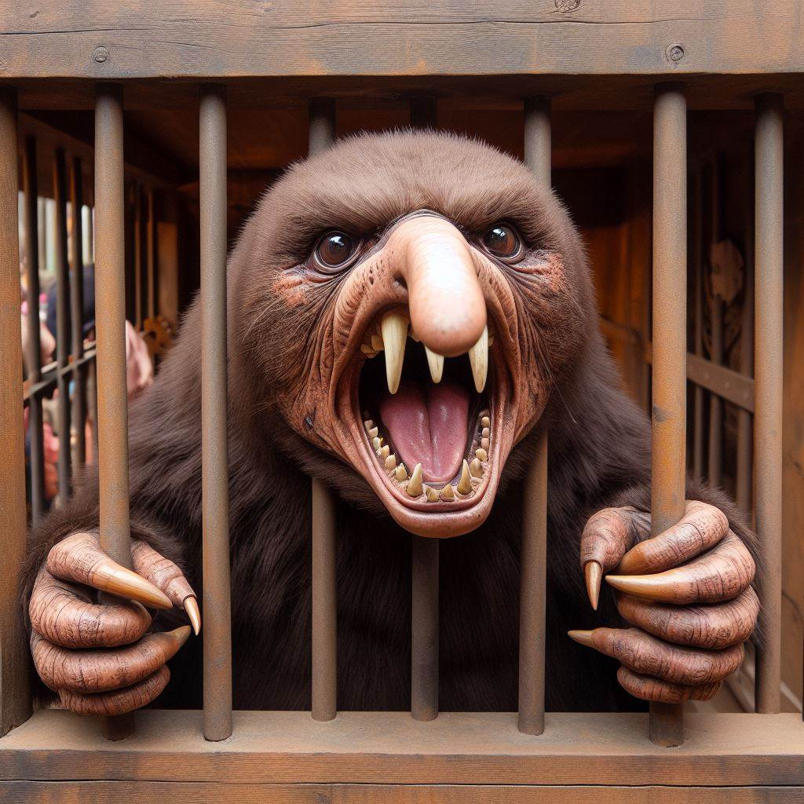

Kapitel 1: Ein schicksalhafter Fund
Es war ein kalter Wintermorgen in Winterthur, als der Niffler Pipsqueak aufgeregt durch die verschneiten Straßen wuselte. Seine Nase zuckte und seine winzigen Ohren wippten, immer auf der Suche nach dem nächsten glänzenden Objekt. Plötzlich blieb er stehen und schnüffelte intensiv. Ein köstlicher Duft strömte aus einem kleinen Geschäft, das "Schätze der Welt" hieß. Pipsqueak konnte nicht widerstehen und schlüpfte durch ein winziges Loch in der Tür. Im Inneren des Ladens stapelten sich antike Vasen, funkelnde Edelsteine und goldene Münzen. Pipsqueaks Augen leuchteten und sein kleiner Beutel zuckte vor Vorfreude. Er schnüffelte hier und da, begutachtete die glitzernden Schätze und sammelte die schönsten Stücke in seinem Beutel. Doch plötzlich ertönte ein lautes Geräusch! Pipsqueak erschrak und sah einen riesigen Mann mit einem grimmigen Gesicht auf sich zukommen.Kapitel 2: Die Flucht
"Du kleiner Dieb!", brüllte der Mann und schnappte nach Pipsqueak. Der Niffler war flink und rannte so schnell er konnte durch den Laden. Der Mann rannte hinterher, aber Pipsqueak war zu geschickt. Er schlüpfte durch ein weiteres Loch in der Wand und entkam in die kalte Winterluft. Pipsqueak war außer Atem, aber er hatte es geschafft. Er kletterte auf einen schneebedeckten Baum und betrachtete seinen Beutel voller Schätze. Er war glücklich, aber gleichzeitig wusste er, dass er in Gefahr war. Der Mann würde ihn nicht so einfach davonkommen lassen.Kapitel 3: Unerwartete Hilfe
Während Pipsqueak überlegte, was er nun tun sollte, bemerkte er eine Gestalt, die sich ihm näherte. Es war ein kleines Mädchen mit einem freundlichen Gesicht. "Hast du dich verlaufen?", fragte sie mit sanfter Stimme. Pipsqueak zögerte kurz, dann nickte er. Er vertraute diesem Mädchen instinktiv. "Keine Angst", sagte sie und lächelte. "Ich helfe dir." Das Mädchen nahm Pipsqueak mit nach Hause. Dort gab sie ihm etwas zu essen und ein warmes Plätzchen zum Schlafen. Am nächsten Morgen half sie ihm, einen neuen Unterschlupf zu finden, weit weg vom Geschäft "Schätze der Welt".Kapitel 4: Ein neues Leben
Pipsqueak war dem Mädchen sehr dankbar. Er hatte gelernt, dass nicht alle Menschen ihm Böses wollten. In seinem neuen Zuhause lebte er glücklich und zufrieden. Er sammelte weiterhin glitzernde Dinge, aber er stahl sie nicht mehr. Er fand sie in der Natur oder erhielt sie von Freunden. Pipsqueak vergaß den Mann aus dem Geschäft nie ganz, aber er lernte, keine Angst mehr vor ihm zu haben. Er wusste, dass er immer jemanden hatte, der ihm helfen würde, wenn er in Not war.Ende
